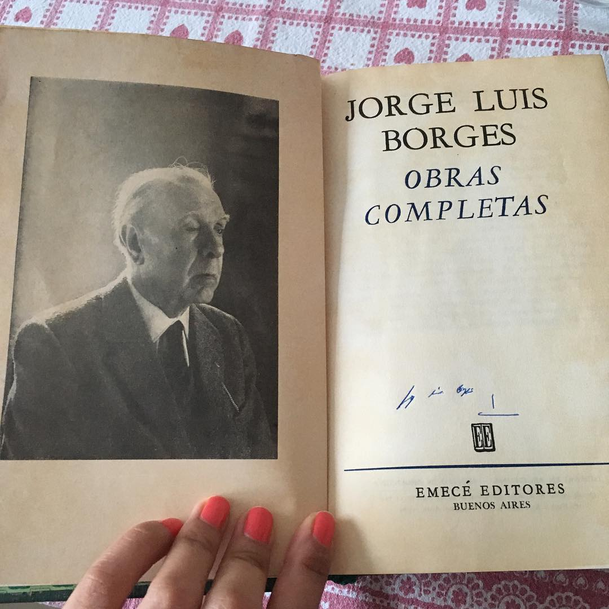
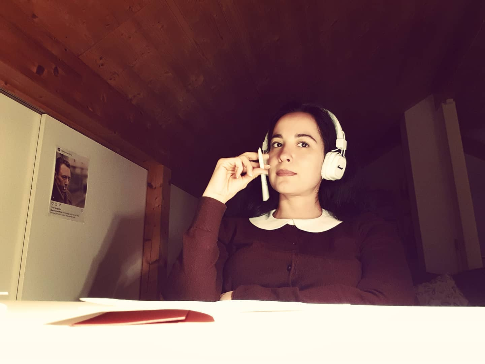

Soy venezolana.
Nací en Caracas.
Desciendo en línea directa de un poeta.
La música es como respirar.
Amo entrar en museos y librerías.
El perro es mi mejor amigo.
Subo montañas.
Vivo en Suiza.
Los Alpes me han sanado.
Tomo fotos de lo que encuentro bello.
Nunca niego el vino o el chocolate.
Compro libros de manera compulsiva.
Escribo poemas que nadie entiende.
Creo firmemente en el hábito de la lectura.
Me gusta buscar estrellas, no importa cuán fría sea la noche.
Soy traductora y enseño idiomas.
Proclamo que ninguna lengua es tan hermosa como el español.
La mejor medicina es tocar la tierra con las manos y ver crecer las flores.
Todos los días sueño con el mar.
Siempre he querido a Picasso.
Siempre estoy de viaje.
La vida es un juego (de la oca).